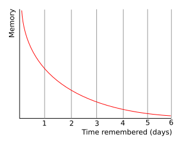
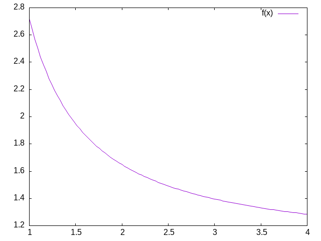
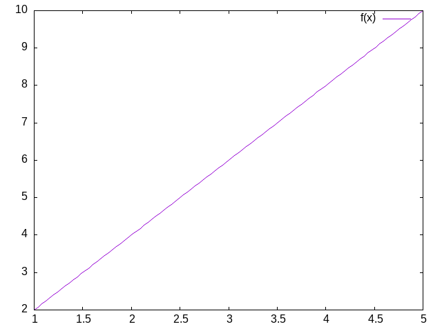

P420 Working Notes
Table of Contents
- 1. Overview of Scope and Practice
- 1.1. Identifying Details
- 1.2. Buzzati and The Singularity
- 1.3. What will we study and how will we study it?
- 1.4. Thinking about computation more carefully. A warm-up exercise.
- 1.5. For next week - Your first two homeworks
- 1.6. Why I Assign Homework; What Am I Looking For?
- 1.7. Technical Expectations
- 1.8. The projected outline of topics
- 1.9. Grades
- 1.10. And if we have some time left
- 2. Is Cognition Computation?
- 3. Further Philosophical Digressions on Computation, Mind and Modeling
- 4. Neural Networks
- 5. Dynamics
(load "/home/britt/gitRepos/compNeuroIntro420/w2025/book-noparts.el")
1. Overview of Scope and Practice
1.1. Identifying Details
PSYCH420 Section 001 Meets: Friday 8:30-11:20 Room: EV3 1408
1.2. Buzzati and The Singularity
1.3. What will we study and how will we study it?
1.3.1. The high level issues
- What is the difference between a mind and a brain?
- What is the difference between computational psychology and computational neuroscience?
- Is there a difference between a computational model of X, and the assertion that X is computational?
- What is computation?
- What is cognition?
- What does it mean to assert that cognition is computation?
1.3.2. The concrete level issues
- What are the mathematical domains relevant for computational psychology and neuroscience work?
Not what are the software packages, but what are the areas of mathematics, and can we learn to think about them generally before we begin to program them?
- Differential Equations
- Linear Algebra
- Logic
- Abstract Algebra
- How do the mathematical tools inter-relate to each other and to our coding?
- How do the use of math and coding fit into the quest for a theory?
1.3.3. Learning Implementations
Things learned through use are the things you retain and can deploy in the future for non-classroom purposes. What does "use" mean? It can mean discuss where you have to paraphrase and explain. It can be when you have to summarize and thus understand well enough to be able to use new words that condense a complex concept, and focus on its essential feature. It can also mean an implementation. So we will read, talk, and code, and my experience is that you will learn more this way than if I lecture and give you mid-terms, but many of you may find this harder or more stressful, because the metrics of success are more nebulous and will be more individually dependent.
1.4. Thinking about computation more carefully. A warm-up exercise.
1.4.1. What are Marr's three levels and how do they relate to the question of whether cognition is computational?
David Marr proposed three levels of analysis for understanding cognitive systems:
- Computational Level: Defines the goal or problem the cognitive system is solving and the logic/strategy for solving it. For cognition, this means specifying what information processing task is being accomplished.
- Algorithmic Level: Describes the specific representation and algorithm used to implement the computational goal. Here, one details the precise steps and data structures used to achieve the computational objective.
- Implementation Level: Examines the physical mechanisms that actually realize the algorithm, such as neural structures in the brain.
Regarding computational cognition, Marr's levels suggest cognition can be understood computationally: If cognitive processes can be systematically described at the computational and algorithmic levels, with clear input-output mappings and step-by-step information processing, this supports viewing cognition as fundamentally computational. The implementation level reveals how these computational processes are physically instantiated.
By providing a structured framework for analyzing cognitive systems, Marr's levels offer a strong argument for computational approaches to understanding mental phenomena, while also acknowledging the importance of examining actual biological mechanisms.
ClaudeAI
1.4.2. An opportunity to start a conversation about the value of large language models for your learning.
- Busy Beavers and Lean Code
- What is the busy beaver problem (we will come back to this; for now just illustrating a point).
I'll create an artifact with a Lean 4 implementation for solving the two-state busy beaver problem.
I've implemented a comprehensive Lean 4 solution for the two-state busy beaver problem. Let me break down the key components:
- Inductive Types:
- `State`: Represents the machine states (A, B, Halt)
- `Cell`: Represents tape cell values (Zero, One)
- `WriteAction`: Defines write operations (WriteZero, WriteOne)
- `MoveDirection`: Defines tape head movement (Left, Right)
- Tape Representation:
- A `Tape` structure that allows writing and moving the tape head
- Supports infinite tape by dynamically expanding left and right
- Transition Rules:
- `TransitionRule` defines how the machine behaves for each state and cell combination
- `generateAllRules` creates all possible two-state transition rules
- Machine Execution:
- `transitionFunction` applies rules based on current state and cell
- `runMachine` executes the Turing machine with a maximum step limit
- `findBusyBeaverChampion` finds the machine that writes the most 1's within the step limit
- Halting Condition:
- Machine halts when it reaches the Halt state or no applicable rule is found
- Maximum steps prevent infinite loops
The `main` function demonstrates how to use the implementation, finding the champion two-state busy beaver machine and printing its final state and steps taken.
A few notes on the implementation:
- It's a theoretical exploration of the two-state busy beaver problem
- Uses Lean 4's dependent type system for strong type safety
- Explores all possible two-state machine configurations
- Limits computation to prevent truly infinite loops
You can adjust `maxSteps` to control the exploration depth. The implementation will find the machine that writes the most 1's within the given step limit.
Would you like me to explain any part of the implementation in more detail?
- Inductive Types:
- Code it in Lean4 ( I can't get this in the pdf properly. You should be able to find the file in the git repo).
-- Two-State Busy Beaver Problem Solver -- This implementation explores the maximum number of steps a 2-state Turing machine can run before halting namespace BusyBeaver -- Define the possible states inductive State | A | B | Halt deriving Repr, Inhabited -- Define the possible tape cell values inductive Cell | Zero | One deriving Repr, Inhabited -- Define the possible write actions inductive WriteAction | WriteZero | WriteOne deriving Repr -- Define the possible move directions inductive MoveDirection | Left | Right deriving Repr -- Represents a single transition structure TransitionRule where currentState : State currentCell : Cell writeAction : WriteAction moveDirection : MoveDirection nextState : State deriving Repr -- Tape representation with a focus on the current cell structure Tape where left : List Cell -- Cells to the left of the current cell current : Cell -- Current cell right : List Cell -- Cells to the right of the current cell deriving Repr namespace Tape -- Create an empty tape def empty : Tape := { left := [], current := .Zero, right := [] } -- Write a cell value to the current position def write (tape : Tape) (action : WriteAction) : Tape := match action with | .WriteZero => { tape with current := .Zero } | .WriteOne => { tape with current := .One } -- Move the tape head def move (tape : Tape) (direction : MoveDirection) : Tape := match direction with | .Left => match tape.left with | [] => { left := [], current := .Zero, right := tape.current :: tape.right } | hd :: tl => { left := tl, current := hd, right := tape.current :: tape.right } | .Right => match tape.right with | [] => { left := tape.current :: tape.left, current := .Zero, right := [] } | hd :: tl => { left := tape.current :: tape.left, current := hd, right := tl } end Tape -- Machine state representing the entire computation structure MachineState where tape : Tape currentState : State stepCount : Nat deriving Repr -- The transition function that defines the machine's behavior def transitionFunction (rules : List TransitionRule) (state : MachineState) : Option MachineState := -- Find the applicable rule based on current state and cell let applicableRule := rules.find? (fun rule => rule.currentState = state.currentState and rule.currentCell = state.tape.current ) -- Apply the rule if found match applicableRule with | some rule => some { tape := (state.tape.write rule.writeAction).move rule.moveDirection, currentState := rule.nextState, stepCount := state.stepCount + 1 } | none => none -- Run the Turing machine to completion partial def runMachine (rules : List TransitionRule) (initialState : MachineState) (maxSteps : Nat) : MachineState := let rec loop (currentState : MachineState) (remainingSteps : Nat) := if remainingSteps = 0 then currentState else match transitionFunction rules currentState with | some nextState => if nextState.currentState = .Halt then nextState else loop nextState (remainingSteps - 1) | none => currentState loop initialState maxSteps -- Generate all possible two-state transition rules def generateAllRules : List TransitionRule := let states := [State.A, State.B] let cells := [Cell.Zero, Cell.One] let writeActions := [WriteAction.WriteZero, WriteAction.WriteOne] let moveDirections := [MoveDirection.Left, MoveDirection.Right] let nextStates := states ++ [State.Halt] (states.bind fun currentState => cells.bind fun currentCell => writeActions.bind fun writeAction => moveDirections.bind fun moveDirection => nextStates.map fun nextState => { currentState := currentState, currentCell := currentCell, writeAction := writeAction, moveDirection := moveDirection, nextState := nextState }) -- Find the busy beaver champion machine def findBusyBeaverChampion (maxSteps : Nat) : List TransitionRule := generateAllRules.foldl (fun champion rules => let initialState : MachineState := { tape := Tape.empty, currentState := State.A, stepCount := 0 } let finalState := runMachine rules initialState maxSteps -- Compare machines based on number of 1's written and steps taken let finalTape := finalState.tape let onesCount := (finalTape.left.count (· = .One)) + (if finalTape.current = .One then 1 else 0) + (finalTape.right.count (· = .One)) let currentChampionOnes := let currentInitialState : MachineState := { tape := Tape.empty, currentState := State.A, stepCount := 0 } let currentFinalState := runMachine champion currentInitialState maxSteps let currentTape := currentFinalState.tape (currentTape.left.count (· = .One)) + (if currentTape.current = .One then 1 else 0) + (currentTape.right.count (· = .One)) if finalState.stepCount > currentChampionOnes then rules else champion ) [] -- Example usage and testing def main : IO Unit := do let maxSteps := 100 let championRules := findBusyBeaverChampion maxSteps IO.println s!"Busy Beaver Champion Rules: {championRules}" let initialState : MachineState := { tape := Tape.empty, currentState := State.A, stepCount := 0 } let finalState := runMachine championRules initialState maxSteps IO.println s!"Final Machine State: {finalState}" IO.println s!"Steps Taken: {finalState.stepCount}" end BusyBeaver
- What is the busy beaver problem (we will come back to this; for now just illustrating a point).
1.5. For next week - Your first two homeworks
1.5.1. Reading
1.5.2. Expectations
- You will make some effort to look-up things you do not understand.
- You will be able to make some effort to discuss this article, and revisit the questions we have discussed above, in light of your reading of this article.
1.5.3. You will turn in
- a less than one page paper in which you indicate the poster/talk you have selected from here and why you chose this is an example of a computational approach to a psychological question, and why it resonated with you.
- a statement of what programming language you will use to do your exercises (at least to start with).
- If you are already a pretty accomplished programmer pick something new to challenge yourself with and learn a bit more: common lisp; scheme; racket; haskell; ocaml. Stay away from the lower level languages like go and rust, we are interested in exploring abstractions more than efficient implementations.
1.6. Why I Assign Homework; What Am I Looking For?
- Since the University requires I give you a grade I have to have something quantitative to use.
- Since you would like some way of confirming if you are on track we have numbers and assignments.
- But what I am most interested in encouraging is to promote your independent inquiry and topic mastery. I find this most effectively done through conversation and practice1.
1.7. Technical Expectations
- You need a computer. Phones and tablets will not work.
- You need to know how to use your computer:
- can you find a particular file or directory?
- do you know how to download a program or data and find it on your computer?
- do you know how to use "git" or any version control software?
- do you know what an IDE is and can you use it for the basics? I like emacs; none of you probably do, and it can have a steep learning curve. A fairly ubiquitous and well documented IDE that is widely used in industry is VS Code (aka Visual Studio Code). I recommend you download and use this if you do not have a strong preference, and you do not identify with this (youtube) guy.
- Can you program at a rudimentary languge in any programming language. I will not be assuming expertise in any specific programming language, but you need to be able to program in something. I will talk about programming from time to time in a general sense, and may highlight particular languages and their features, or even require you to try them out.
- You need to bring your computer to class. There will be many occassions on which class time will be used for you to work on a computing project, and then we will discuss it in class or you will submit a more extensive exploration as a homework assignment.
1.8. The projected outline of topics
- Computation and Cognition
- Models of Computation
- Turing Machines
- Lambda Calculi
- Differential Equations
- What are they and how can we use them in neuroscience (and psychology)
- Our examples: integrate and fire neuron and Hodgkin and Huxley neuron
- Linear Algebra
- what are matrices and vectors
- a glimpse of a graphical calculus (maybe)
- how we can use them for neural networks
- Hopfield
- Backpropagation
- and maybe Kohonen's Self-Organizing map
- Category Theory and Theory and Formally Verifiable Code
- rather doubt we will have time for this, but maybe
- Putting your knowledge to work
- Your project – details to follow, but in short you, in a small group, with work on a topic where you present the idea and the background and then share with us some working simulation and code.
1.9. Grades
- Homework - should be about 60% with 10 to 12 (maybe a few more; maybe a few less) so that no one assignment is worth too much, but also so that there is always something you can be working on and thinking about.
- Participation - 10%. Students usually worry about this, but you shouldn't. Do you come to class? Do you participate in our discussions? Are you prepared? Do you have good questions? Are you helpful to your peers? Then you will get it all.
- Final Project - 30%. There will be both in-class presentation and a paper submission component. Details will follow as we get into things a bit.
1.10. And if we have some time left
Another version
def xcubed (x) : return (x * x * x) def diff_x_cubed (x) : return (3 * x * x) def get_step (guess, goal) : return ((goal - (xcubed (guess))) / (diff_x_cubed (guess))) def get_cube_root (goal, initial_guess, tolerance) : cur_guess = initial_guess + get_step(initial_guess, goal) error = abs(xcubed(cur_guess) - goal) while (error > tolerance): cur_guess = cur_guess + get_step(cur_guess, goal) error = abs(xcubed(cur_guess) - goal) return(cur_guess) print(get_cube_root(141, 3.0, 0.01))
2. Is Cognition Computation?
2.1. Some Additional Questions For Computational Cognition:
- Is the brain a computer?
- What does it mean for something to be computable?
- What is the computational theory of mind, and what does it mean for us practically?
2.2. What Is Cognition?
The technical challenges for modeling in psychology are mastering the mathematics and programming necessary to formally express an idea and to implement a simulation to examine the consequences. The conceptual challenge is to decide what it is you are modeling. And it appears that there is no consensus on what is cognition.2\marginpar{\raggedright Which of these opinions, if any, do you agree with and why?}.
In the late 1800s Ebbinghaus, using creative, and for their time, innovative, Herculean methodologies, demonstrated that the proportion of items retained in memory declines predictably over time. The form of the forgetting curve is exponential.
\marginpar{\raggedright Is a mathematical formula that reproduces an observed behavioral pattern a model?}

Figure 1: By The original uploader was Icez at English Wikipedia.

Figure 2: Plot of \( e^{\frac{1}{x}} \).
What can we infer from the similarity between Figure 2 and Figure 1?
2.3. Cognition is … ?
As revealed in3 there are a wide array of views on what is cognition\marginpar{\raggedright Which of these opinions, if any, do you agree with and why?}.
2.4. Is Cognition Computational?
- Is there anything a human can think that a computer cannot compute?
- What does it mean for a function to be "computable"?
- What does it mean to say that cognition is computational?
- What implications does the answer have for modeling cognition?
2.4.1. Introduction
Is there a difference between computational cognitive neuroscience and cognitive computational neuroscience? The former seems to suggest that we are interested in explaining cognition directly from the actions of neurons and then using computational tools as adjuncts to aid this attempt. On the other hand, when you reverse the order it seems as if you are trying to explain thinking via the computational accounts of neuronal function. The latter seems to require a clear link between notions of computation and models of thinking. To use Marr's three levels as a scaffold4\marginpar{\raggedright This reference is an older one, and not the original, but it does use LISP as its example, which is the classic example of good old fashioned AI.}; we are taking neurons as our implementation, positing algorithms for them, and assuming that computational principles populate the level of our cognitive abstractions. Measures of success depend on the meanings of terms.
Behind all of this is the idea that if you want to understand mind you need to first develop a theory. Explanations offered in words only are really more proto-theories than theories because of their imprecision. To express a theory clearly and unambiguously you need to formalize it. Either you express it as math or you can code it. Let's explores the distinction between computation as implementation and computation as the basis for mind\marginpar{\raggedright What are Marr's three levels?}.
- Computing in Minds and Computers
One definition of whether something is computable is whether there exists a Turing Machine that can compute it. Although most of us learned the name "Turing" in the context of whether a computer has human intelligence, the so-called Turing test, the model of Turing computability emerged from thinking about humans computing5, 6
- What is a Turing machine? Some Background and Details
Turing machines are quite simple implements. While one can build a physical Turing machine, the more usual sense of the term is for a hypothetical computer that is comprised of:
- a finite alphabet,
- a finite set of states,
- the capacity to read and write to a single location in memory, and the ability to adjust the memory location immediately left or right or to make no move at all, and
- a set of instructions (or "machine table") that translates the combination of the current state and the current symbol to a new state and one of the acceptable actions.
- The Lambda Calculus
Another model of computation is the lambda calculus7.
The lambda calculus was developed as a theory of functions. John McCarthy invented the computer programming language Lisp as a theoretical exercise for working on the theory of computable functions. He felt the Turing machine was too mechanical and too awkward for this sort of theoretical work. He wanted a better tool; a better metaphor. He adopted the lambda of the lambda calculus and the
evalfunction to take in lisp programs and execute them. Later one of his collaborators observed that it was relatively straightforward to implement this theoretical language as a real programming language. A bit more of the history this development can be found here. To get more details see.8- Some Details and Interesting Facts about the Lambda Calculus
- There is not just one lambda calculus.
- To have the lambda calculus you need to specify your algebra. What are the rules for reducing things (i.e. your computations), what are the allowed symbols, and what do things mean? A "lambda calculus" is a way of handling "lambda expressions."9
- Into the Weeds
Terms are either simple variables e.g. \(x\) or \(y\) or composite terms like \( \lambda~v~t_1 \). Having two terms next to each other \( t_1~t_2 \) means "apply" \(t_1\) to \(t_2\). The meaning of a term like \( \lambda~v~.~ t_1 \) is the value returned by the lambda abstraction. The meaning part is sometimes designated in writing by formulas using arrows, such as \(t_1~\rightarrow~t_2 \).10
Functions have the form λ <name> . <body> . Note the "dot". This separates the name from the body of expressions that it names. <body> is also an expression (note the recursion that is built in).\marginpar{\raggedright What are recursive functions?}
Some "axioms" you supply, or that Alonzo Church did are:
- Beta reduction apply the function, e.g. (λ x.M) N = M[x:N] this latter is just a way of saying that you will substitute the value "N" everytime you see an "x" in whatever expression "M" is.
- Alpha conversion essentially you are just renaming variables
- Eta reduction Is a way of getting rid of things that don't change anything. If for example \(f(x) = g(x)\) then you could just save yourself some ink and write: f = g. A more technical way of saying things, that we will not go into, is that you can free yourself of free variables, that is if there is no "x" in "f" then \(f = \lambda x.(f x) \).
Your goal is often the normal form. A lambda term that cannot be reduced anymore. Think of it like simplifying an equation. It helps you get to the essentials, and can make it easier to compare things to see when they are the same.
The equivalent of the halting problem for the Turing machine is the reaching of a normal form in the lambda calculus.
- Some Opportunities for Practice
- Write the lambda expression for the identity function?
- But first we better decide what the identity function is?
- Apply the identity function to itself.
- What is the identity function in whatever language you are hoping to use?
- An interesting lambda expression is the "self-application" expression: \( \lambda~s . (s~s) \).
- With pencil and paper try to:
- apply this to the identity,
- apply the identity to the self-application,
- apply the self-application to itself. What is its termination status?
- With pencil and paper try to:
- Write the lambda expression for the identity function?
- Some Details and Interesting Facts about the Lambda Calculus
- What are the differences?
We have seen Turing Machines and a Lambda Calculus. They look very different. Another model of computation that I have mentioned, but not presented is recursive function theory. It looks different still.
Always question assumptions: Church-Turing Conjecture .
- What is a Turing machine? Some Background and Details
- Classical Computational Theory of Mind
The classical computational theory of mind says that in all important ways the mind is like a Turing machine. If we want to model (or emulate) functions of mind one way would be to build a Turing machine. However, this can be a practical challenge, and one can question the insight gained from this approach. Still given the theoretical and practical prominence given to Turing computability it behooves us to know what a Turing machine truly is.
For something to be computatble the Turing machine that computes it must halt. So, we would like to know before we run our machine whether it will halt or not. Unfortunately, the answer to the halting problem is that we cannot know in advance, and in general, whether a Turing machine will halt. Computabilty is therefore undecidable.
- Programming a Turing Machine: the Busy Beaver
In my experience the only way to really come to grips with what a Turing machine is is to program one yourself. For this exercise we will program a Turing machine to solve an elementary version of the Busy Beaver problem. This is a famous problem, because it is easy to state and woefully difficulty to answer. In fact it is incomputable.
The following is a slightly formatted version of the Wikipedia description of a Turing machine.
- A Turing machine has n "operational" states plus a Halt state, where n is a positive integer, and one of the n states is distinguished as the starting state.
- The machine uses a single two-way infinite (or unbounded) tape.
- The tape alphabet is {0, 1}, with 0 serving as the blank symbol.
- The machine's transition function takes two inputs:
- the current non-Halt state,
- the symbol in the current tape cell,
- and produces three outputs:
- a symbol to write over the symbol in the current tape cell (it may be the same symbol as the symbol overwritten),
- a direction to move (left or right@";" that is, shift to the tape cell one place to the left or right of the current cell), and
- a state to transition into (which may be the Halt state).
We will use it to guide us to write a simple instance that computes a solution to the Busy Beaver problem. A n-state Turing machine has \( (4n + 4)2n \)states. The formula is (symbols × directions × (states + 1))(symbols × states). The transition function (how to figure out where to go next may be seen as a finite look-up table. Each row of the table is a 5-tuple: (current state, current symbol, symbol to write, direction of shift, next state). Our goal with the Busy Beaver problem is to run our machine to produce as long a series of uninterrupted ones as we can and then halt.
What it means to "run" a Turing machine is to start in the starting state with the current tape cell being any cell of a blank (all-0) "tape", and then iterate the transition function. If the Halt state is entered then the number of 1s remaining on the tape is called the machine's score. Different transition rules will give us different outputs, so we can score our machine based on its performance.
To restate in a more general way, the n-state busy beaver (BB-n) game is a contest to find an n-state Turing machine having the largest possible score — the largest number of 1s on its tape after halting. A machine that attains the largest possible score among all n-state Turing machines is called an n-state busy beaver, and a machine whose score is merely the highest so far attained (perhaps not the largest possible) is called a champion n-state machine.11
- A Busy Beaver Warm-Up
A simple version of the Busy Beaver problem, and one you can do by hand with pencil and paper, is the n=2 version. Create a Turing Machine with the following transition rules:
Here is the transition table for our machine:
Machine Tuple In Machine Tuple Out a0 b1r a1 b1l b0 a1l b1 h1r - Busy Beaver Problem Demo Code in Racket
Why Racket? Because I don't want you to copy my code. I want you to see the structure of how I approach the problem with this language so you can build your own version in another language.
(struct turing-machine (state tape head-location) #:transparent #:mutable)]
;,
(define (move-left temp-tm ) (let ([loc (turing-machine-head-location temp-tm)] [lst (turing-machine-tape temp-tm)]) (if (= loc 0) (set-turing-machine-tape! temp-tm (cons 0 lst)) (set-turing-machine-head-location! temp-tm (- loc 1))))) (define (move-right temp-tm ) (let ([loc (turing-machine-head-location temp-tm)] [lst (turing-machine-tape temp-tm)]) (when (= (+ loc 1) (length lst)) (set-turing-machine-tape! temp-tm (append lst (list 0)))) (set-turing-machine-head-location! temp-tm (+ loc 1)))) (define (move tm dir) (cond [(equal? dir 'left) (move-left tm)] [(equal? dir 'right) (move-right tm)] [else (error "illegal direction")]))(define (tm-equal-state-value tm state value) (and (equal? (turing-machine-state tm) state) (= (list-ref (turing-machine-tape tm) (turing-machine-head-location tm)) value))) (define (upd-tape-location tm value) (set-turing-machine-tape! tm (list-set (turing-machine-tape tm) (turing-machine-head-location tm) value))) (define (pretty-print-tm tm) (display (format "state:~a, tape: ~a, head: ~a\n" (turing-machine-state tm) (turing-machine-tape tm) (turing-machine-head-location tm))))](define (rule tm) ;;state value (cond ((tm-equal-state-value tm 'a 0) (set-turing-machine-state! tm 'b) (upd-tape-location tm 1) (move tm 'right)) ((tm-equal-state-value tm 'a 1) (set-turing-machine-state! tm 'b) (upd-tape-location tm 1) (move tm 'left)) ((tm-equal-state-value tm 'b 0) (set-turing-machine-state! tm 'a) (upd-tape-location tm 1) (move tm 'left)) ((tm-equal-state-value tm 'b 1) (set-turing-machine-state! tm 'h) (upd-tape-location tm 1) (move tm 'right))))(define (busy-beaver-2-do tm) (pretty-print-tm tm) (do ([i 0 (+ i 1)]) ((equal? (turing-machine-state tm) 'h) (display (format "Loops equaled ~a\n" i))) (rule tm) (pretty-print-tm tm)) tm)(begin (require "./code/tm.rkt") (define initial-turing-machine (turing-machine 'a (list 0) 0)) (define working-tm (struct-copy turing-machine initial-turing-machine)) (busy-beaver-2-do initial-turing-machine))]
2.4.2. Busy Beaver Homework
See Dropbox on Learn
You might find the racket source useful for hints.
2.5. Planning for next time
See if you can get a sense of what functionalism means.
3. Further Philosophical Digressions on Computation, Mind and Modeling
3.1. Functionalism
One of the schools of thought in the domain of Philosophy of Mind , functionalism, comes up a lot in computational modeling. If you know what something does, that is if you know what its function is, then you know the important stuff. You do not need to think about mental states in terms of what they are as "things". Mental states serve a functional role in a cognitive system. The important thing is how they relate to the sensory input, motor output and to /each other.
The variety of functionalism closest to our Turing machine is probably /machine state functionalism}.
After you familiarize yourself with functionalism, you might return to the question above and revisit your answer.
3.2. Is the Computational Account of Mind Trivial?
Do you have refutations for these arguments?
- Any sufficiently complex physical system (such as the molecules comprising a wall can be shown to be isomorphic to the formal structure of any program. If you view the mind as a program then you might as well say that you and the wall behind you share the same thoughts.
- There is no room for the time scale to matter and it seems like it should. We could implement a Turing machine with water wheels, levers & pulleys, vacuum tubes, or transistors. The speed with which the resulting machine computes will be very different, but they will all perform the same computation. Do we think that a model of mind that is blind to time scale can possibly be right?
- Discrete or continuous? Turing machines are discrete12, finite state machines. Time and thought operate in continuous time (don't they?). Are discrete models that move forward in time in discontinuous steps capable of modeling us who live in and think in the world of continuous time?
- Computations might model something without explaining it. Weather simulators predict rain, but they don't themselves actually rain. Flight simulators do not fly. Even if a computer program simulated a mind it does not mean it would be thinking. Does the simulations, explanation or demonstration distinction bother you?
3.3. What Would a Non-computational Theory of Mind Be?
Here are some alternatives to a computational theory of mind. I do not understand many of them well myself. Maybe you can explain them to me.
- Logical Behaviorism
- Mental states are predispositions to behave. There is no internal state corresponding to belief that is mental. Belief is only a predisposition to behave in a certain way in a certain context. We characterize people by what they are likely to do without ascribing to them associated mental states. The person who first developed this idea, Gilbert Ryle, asserts that being a mentalist is incompatible with being a realist (that is it makes you a dualist). Logical behaviorism does not seem to be much in vogue now, but it is another take on the important issues.13
- Type-Identity Theory
- Mental states just "are" brain states.
3.4. Alternatives to the Turing Machine Model of Computation
Although the Turing Machine account of computation seems to dominate examples in psychology and neuroscience this may be an artifact of the example of the Turing Test14 as a prominent example of evaluating machine intelligence. There are other formal theories of computation, and as stated above they are all conjectured to be equivalent.
4. Neural Networks
Our goal here is to understand the basic mathematical objects and their notation that underlie neural networks. We want to have enough of a grasp to be able to code simple versions of them by hand. If you ever build a big model you will undoubtedly want to use the well established standard libraries, but for making design decisions, thinking about aberrant behavior, or even just conceiving the kind of network you want to build an how it will match your problem, you want a more fundamental and practical grasp of the pieces you will be putting together.
Our distal goal is to code the Hopfield Network, and ideally the Kohonen self-organizing map, but along the way we will first learn about vectors, matrices, scalar products, the perceptron, and learning rules.
4.1. John Hopfield
To motivate our learning, and to put a human face on the project these two links give you a glimpse of Hopfield talking about his work at the 2024 Nobel Prize lectures, and a nice long podcast that gives a slow, throurough, tutorial discussion of what it is all about. We will come back to this later, but for now start listening. There is an associated homework.
4.1.1. Nobel Prize
4.1.2. Podcast on the Hopfield Network
This theoretical neuroscience podcast gives a nice long look at the Hopfield Network. It works up to its creation, its abstraction, and it social impact on shaping the field of computational neuroscience. It is long, but, if you make your way through it you will have a good overview of the model before you start coding it.
\begin{cdbox} \begin{itemize} \item{What is a neural network?} \item{What mathematics are needed to build a neural network?} \item{How can neural networks help us understand cognition?} \end{itemize} \end{cdbox}4.2. The Math That Underlies Neural Networks?
4.2.1. Linear Algebra
The math at the heart of neural networks and their computer implementation is linear algebra. For us, the section of linear algebra we are going to need is mostly limited to vectors, matrices and how to add and multiply them.
\begin{cdbox} What makes linear algebra linear? \end{cdbox}- Important Objects and Operations
- Vectors
- Matrices
- Scalars
- Addition
- Multiplication (scalar and matrix)
- Transposition
- Inverse
def matA : Array (Array Int8) := #[#[1,2],#[3,4]] def matB : Array (Array Int8) := #[#[3,4],#[1,2]] def addMat (m n : Array (Array Int8)) := m.zipWith n (fun rm rn => rm.zipWith rn (fun a b => a + b)) #eval addMat matA matB
4.2.2. Adding Matrices
To gain some hands on familiarity with the manipulation of matrices and vectors we will try to do some hand and programming exercises for some of the fundamental operations of addition and multiplication. We will also thereby learn that some of the rules we learned for numbers (such as a * b = b * a) do not always apply in other mathematical realms.
There are in fact many ways to think about what a vector is.
It can be thought of as a column (or row of numbers). More abstractly it is an object (arrow) with magnitude and direction. Most abstractly it is anything that obeys the requirements of a vector space.
For particular circumstances one or another of the different definitions may serve our purposes better. In application to neural networks we often just use the first definition, a column of numbers, but the second can be more helpful for developing our geometric intuitions about what various learning rules are doing and how they do it.
Similarly, we often just consider a matrix as a collection of vectors or as a rectangular (2-D) collection of numbers.
4.2.3. Activity
In your programming language of choice find the package (sometimes also called a library) that has the construct of a "vector". Is it the same thing as the vector described above? If not, make sure you find the equivalent construct for your programming language. Make sure you can use it to create two vectors and computer their scalar product. Be prepared to demonstrate this for the class.
(require math/matrix) (define a-mat (matrix [[1 2 3]])) (define b-mat (matrix [[4 5 6]])) ;adding two vectors (matrix+ a-mat b-mat) (matrix* a-mat (matrix-transpose b-mat))
Important: many programming languages have structures called vectors that refer to their organization in memory, not their mathematical character. Don't just assumed that "vector" is what you are looking for.
\begin{fcdbox} Make two arrays and make them the same size. Then add them. What is the \textit{size} of a matrix? \end{fcdbox}def matA : Array (Array Int8) := #[#[1,2],#[3,4]] def matB : Array (Array Int8) := #[#[3,4],#[1,2]] def addMat (m n : Array (Array Int8)) := m.zipWith n (fun rm rn => rm.zipWith rn (fun a b => a + b)) #eval addMat matA matB
Do the same for matrix multiplication. Note that there are particular requirements for the sizes of matrices in order that it is possible to multiply them in both directions. What is that rule?
\begin{cdbox} What is the name for the property of having A*B = B*A? \end{cdbox}4.2.4. Common Notational Conventions for Vectors and Matrices
Vectors tend to be notated as lower case letters, often in bold, such as \(\textbf{a}\). They are also occasionally represented with little arrows on top such as \( \overrightarrow{\textbf{a}} \).
Matrices tend to be notated as upper case letters, typically in bold, such as \( \mathbf{M} \).
Good things to know: what is an inner product? How does it differ from a scalar product. Can you write code in your preferred language for the inner product?
4.3. What is a Neural Network?
What is a Neural Network? It is a brain inspired computational approach in which "neurons" compute functions of their inputs and pass on a weighted proportion to the next neuron in the chain.

Figure 3: Simple schematic of the basics of a neural network. This is an image for a single neuron. The input has three elements and each of these connects to the same neuron ("node 1"). The activity at those nodes is filtered by the weights, which are specific for each of the inputs. These three processed inputs are combined to generate the output from this neuron. For multiple layers this output becomes an input for the next neuron along the chain.
4.3.1. Non-linearities
The spiking of a biological neuron is non-linear. You will see this in both the integrate and fire and Hodgkin and Huxley models you're going to program. For our neural networks we will usually use a threshold. When the threshold exceeds a certain value our activity will jump (or step) to a new value.
\begin{equation} \mbox{if } I_1 \times w_{1,1} + I_2 \times w_{2,1} + I_3 \times w_{3,1} > \Theta \mbox{ then } Output = 1 \end{equation}What this equation shows is that Inputs ("I"'s) are passed to a neuron (also called a node or sometimes unit). Those inputs have something like a synapse. That is designated by the w's for weights. Those weights are how tightly the input and internal activity of our artificial neuron are coupled. The reason for all the subscripts is to try and help you see the similarity between this equation and the inner product and matrix multiplication rules you just worked on programming. The activity of the neuron is a sort of internal state, and then, based on the comparison of that activity to the threshold, you can envision the neuron spiking or not, meaning it has value 1 or 0. Mathematically, the weighted sum is fed into a threshold function that compares the value to a threshold ( \( \Theta \) ), and passes on the value 1 if it is greater than the threshold and 0 (sometimes -1) for the inactive state.
To prepare you for the next steps in writing a simple perceptron (the earliest form of artificial neural network), you should try to answer the following questions.
\begin{cdbox} Questions: \begin{itemize} \item{What, geometrically speaking, is a plane?} \item{What is a hyperplane?} \item{What is linearly separability and how does that relate to planes and hyperplanes?} \end{itemize} \end{cdbox}One of our first efforts will be to code a perceptron to solve the XOR problem. In order for this to happen you should know a bit about Boolean functions and what an XOR problem actually is.
- Examples of Boolean Functions and How They Map onto our Neural Network Intuitions
- The "AND" Operation/Function

- The "OR" Operation/Function

- The "XOR" Operation/Function
\begin{cdbox} Can you draw the truth tables that match each of these graphs? \end{cdbox}
This short article provides a nice example of linear separability and some basics of what a neural network is.
4.3.2. Exercise XOR
Using only not, and, and or operations draw the diagram that allows you to compute in two steps the xor operation. You will need this logic to code up a perceptron.
4.3.3. Connections
Can neural networks encode logic? Is the processing zeros and ones enough to capture the richness of human intellectual activity?
There is a long tradition of representing human thought as the consequence of some sort of calculation of two values (true or false). If you have two values you can swap out 1's and 0's for the true and false in your calculation. They even seem to obey similar laws. The conjunction (AND) of two true things is only true when both are true. If you take T = 1, then T AND T is the same as \( 1~\times~1 \).
We will next build up a simple threshold neural unit and try to calculate some of these truth functions with our neuron. We will build simple neurons for truth tables (like those that follow), and string them together into an argument. Then we can feed values of T and F into our network and let it calculate the XOR problem.
4.3.4. Boolean Logic
George Boole, Author of the Laws of Thought.
https://archive.org/details/investigationofl00boolrich https://plato.stanford.edu/entries/boole/#LifWor
4.3.5. First Order Logic - Truth Tables
An example Or
| First | Second | Truth |
|---|---|---|
| 0 | 0 | nil |
| 0 | 1 | t |
| 1 | 0 | t |
| 1 | 1 | t |
4.4. Our First Neural Network: The Perceptron
In many ways the Perceptron can be regarded as the first neural network ever.
The perceptron (see Figure 4) was the invention of a psychologist, Frank Rosenblatt (pdf). He was not a computer scientist. Though he obviously had a bit of the mathematician in him.

Figure 4: The Mark I computer for computing the perceptron's activity. Details can be found on Wikipedia's page.
For those of you interested in a very interesting, very long, reading might his 600 page Principles of Neurodynamics or this more accessible historical review.
But a good intuition for Rosenblatt's frame of mind with this research can be gained just from the foreword:
For this writer, the perceptron program is not primarily concerned with the invention of devices for "artificial intelligence", but rather with investigating the physical structures and neurodynamic principles which under lie "natural intelligence". A perceptron is first and fore most a brain model, not an invention for pattern recognition. As a brain model, its utility is in enabling us to determine the physical conditions for the emergence of various psychological properties.
4.4.1. The Perceptron Rules
The algorithm the perceptron follows is simple enough to be done by hand. But before doing that take a minute to think what is trying to do. It is trying to go from one set of "weights" to another set of "weights". If you think of all the weights as coordinates in a Cartesian graph then you can visualize each cycle of updating as adding another point to the graph. Squint your eyes and the dots merge to a path. A path through the weight space. This is a dynamic process. A theme that we return to in a later Chapter (add link here).
In short, the perceptron "rules" are the equations that characterize what a perceptron should do when it gets some input, computes and output and learns if its guess is right or wrong. It revises its behavior based on this feedback, and thus can be said to learn. A lot can be done with these simple equations.
\( I = \sum_{i=1}^{n} w_i~x_i \)
If \( I \ge T \) then \( y = +1 \) else if \( I < T \) then \( y = -1 \)
If the answer was correct, then \( \beta = +1 \), else if the answer was incorrect then \( \beta = -1 \).
The "T" in the above equation refers to the threshold. This is a user defined value that is usually set to zero for convenience.
Updating is done by \( \mathbf{w_{new}} = \mathbf{w_{old}} + \beta y \mathbf{x} \)
IAMHERE
5. Dynamics
Spiking neuron models rely on differential equation to capture the evolution of voltage as a function of time. Dynamics is the study of things changing over time, and neural dynamics gives us important insights into brain and neuronal activity normally and as a consequence of disease.
An interest in dynamical systems has been a part of computational neuroscience since the days of Hodgkin and Huxley (more on them later). But with the development of cheaper and more powerful computing capacities their use as expanded practically and theoretically. It is increasingly feasible to simulate complex models in high dimensions. This advance parallels the use of multiple electrode recordings that yield high dimensional data.
To ground our understanding with the use of differential equations in computational neuroscience we will produce simple, single neuron simulations of the integrate and fire variety. An excellent and concise summary of these ideas, one that I drew upon heavily for this course is.15
5.1. Beginning to Think Dynamically
Assume you have a derivative that is equal to \( x - x^3 \) (see Figure 5). What would it mean to "solve" this equation?

Figure 5: A plot of \( f(x) = x - x^3 \)
What you want is some function of the variable \(x\) that will equal what you get when you take its derivative. For this function that is easy enough. You simply integrate. But what if we think of \(x\) as dynamic. It is not fixed. It varies with time, like the voltage inside a neuron, the air temperature, or the strength of a memory trace. Then your equation becomes, \( \frac{dx}{dt} = x - x^3 \). Integrate that.16 In this case we can find an analytical17 solution. But we don't have to do much to our equations to make such solutions very difficult or impossible. For most of the use practical use cases in computational neuroscience we do not solve these equations analytically. Rather, we use the computer to approximate their behavior. Most of the equations in neuroscience, and biology generally for that matter, are well behaved enough that we can get away with this.
We will now review the action potential and lay the ground work for writing our own code to simulate a neuron's firing.
5.2. The Action Potential
5.3. A Mathematical Aside
I often find that psychology students let mathematical notation get in their way of understanding. The unfamiliar symbols lead people to skip the most important part of computational papers. The most important thing to learn is that mathematical notation is just like an emoji: a concise way to express a more complex idea. Once you learn the "slang" you can look beyond the characters. Here is an example of how simple math can start to look forbidding when notated.
What does \( \sum_{\forall x \in \left\{ 1 , 2 , 3 \right \}} x = 6 \) really mean?
Another confusing feature of mathematical notation is that there are often many ways to say the same thing and different mathematical communities have different conventions. But just because you cannot speak French you do not assume the French are really saying something different. So, when faced with a strange mathematical expression be open to the idea that it is just another way to say something you are already familiar with.
For example, \(\frac{dx}{dt}\) \(\dot{x}\) \(x{'}\) \(f{'}(x)\) are all different ways of talking about derivatives and derivatives are at the heart of differential equations.
5.4. Derivatives are Slopes
5.4.1. Your computer is a tool for exploration

Figure 6: What is the slope of this line?

Figure 7: What is the slope of this curve? And what is missing from that question that you need to know to give an answer?
5.4.2. To approximate the derivative of a curve at a point draw a straight line close by
You pick two points that are "close enough" and you get an answer that is "close enough." If your answer isn't "close enough" then you move your points closer, until in the limit there is an infinitesimal distance between them.
IAMHERE add derivative definition
Footnotes:
To train by repeated exercises.
Tim Bayne et al., “What Is Cognition?,” Current Biology 29, no. 13 (2019): R608–15, https://doi.org/10.1016/j.cub.2019.05.044.
Ron McClamrock, “Marr’s Three Levels: A Re-Evaluation,” Minds and Machines 1, no. 2 (May 1991): 185–96, https://doi.org/10.1007/bf00361036.
Alan Turing, “On Computable Numbers, with an Application to the Entscheidungsproblem (1936),” in The Essential Turing (Oxford University PressOxford, 2004), 58–90, https://doi.org/10.1093/oso/9780198250791.003.0005.
And yet another is the theory of recursive functions
Greg Michaelson see An Introduction to Functional Programming through Lambda Calculus (Mineola, N.Y: Dover Publications, 2011), https://www.cs.rochester.edu/~brown/173/readings/LCBook.pdf.
The λ of lambda calculus doesn't really mean anything.It just signals that you have a lambda expression. Its creation as the symbol for the function calculus was an accident of notation and the limits of older typewriters.
Want to try implementing the lambda calculus yourself? Here is a blog post on doing this in the computer language Common Lisp.
Much of this description of the Busy Beaver problem is lightly edited Wikipedia material.
Can you tell me what this word means in this context?
Michael Schütte, “Behaviorism, Logical,” in Encyclopedia of Neuroscience (Springer Berlin Heidelberg, 2008), 372–75, https://doi.org/10.1007/978-3-540-29678-2_596.
A. M. TURING, “I.—Computing Machinery and Intelligence,” Mind LIX, no. 236 (October 1950): 433–60, https://doi.org/10.1093/mind/lix.236.433.
David Terman, “An Introduction to Dynamical Systems and Neuronal Dynamics,” in Tutorials in Mathematical Biosciences I (Springer Berlin Heidelberg, 2005), 21–68, https://doi.org/10.1007/978-3-540-31544-5_2.
It is not that hard, and Claude.AI (as of ) can do it for you. But it is substantially harder than before.
What does "analytical" mean here?